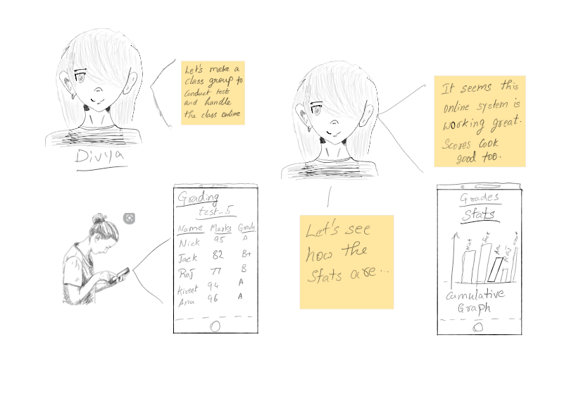
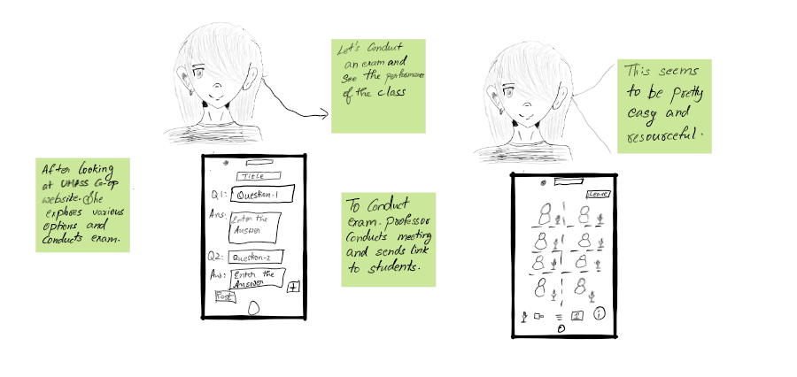
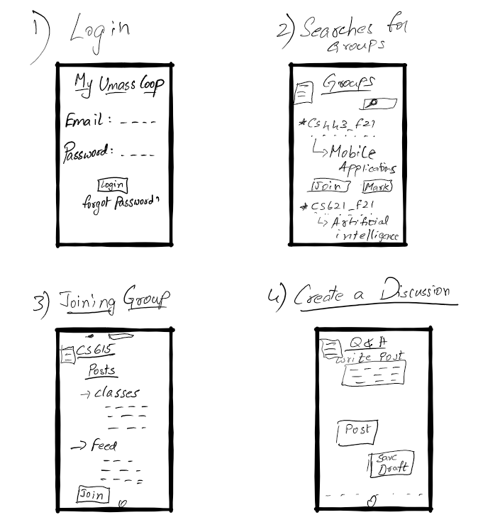
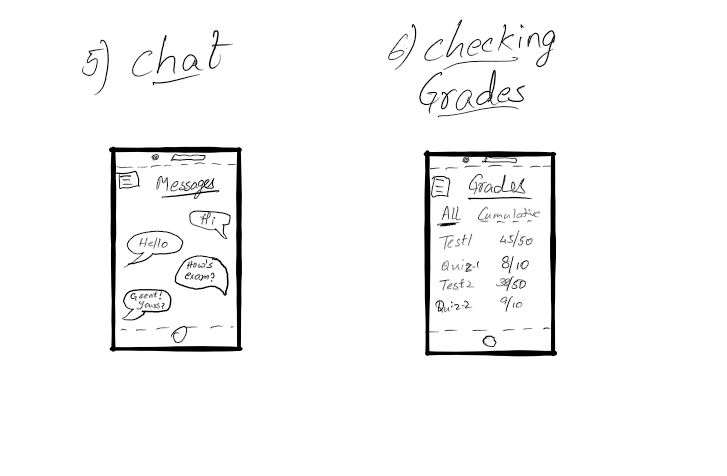
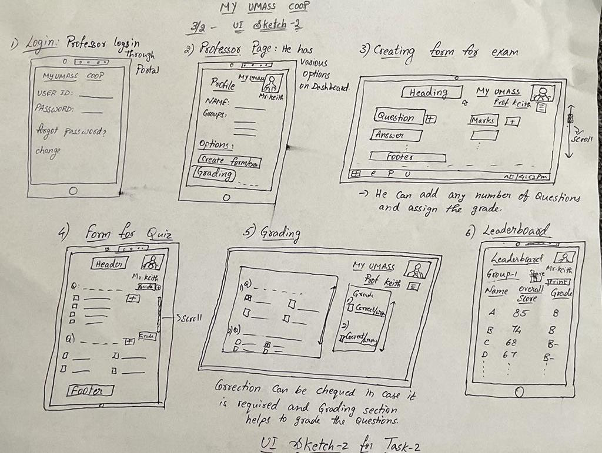
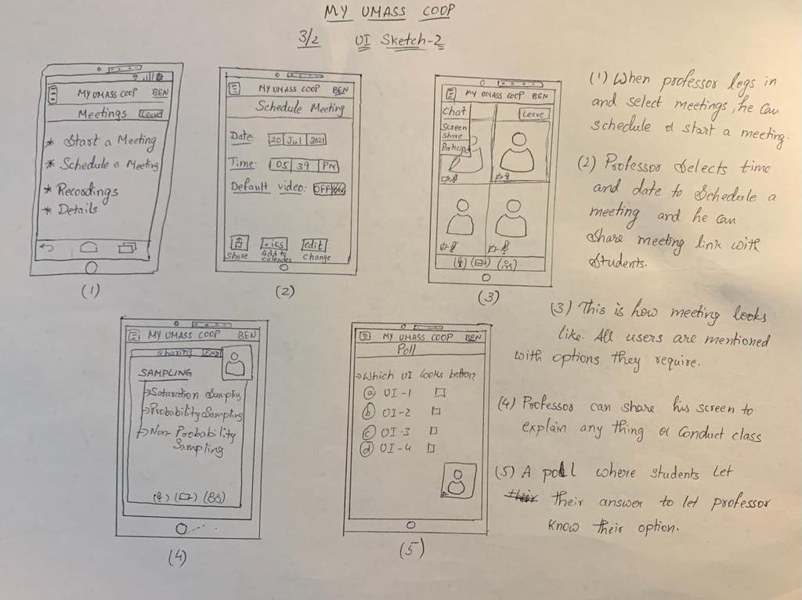

1. Story Board
Below is the story board based on the tasks we have previously mentioned.
1. Grouping among students

Task-1: Story telling how ben makes a student group.
2. Teacher forming groups
 Task-2: Story telling how Mr.Benjamin(Ben) makes a student group for his class.
3. Professor conducting Meeting


Task-3: Story telling how Mr.Keith schedules meeting for his class.
UI Sketches based on Task Analysis
In the project step-2 we have done task analysis and based on that analysis we have done the following sketches.


Sketch-1: Ui Sketch-1 of Task-1 showing all the subtasks.
 Sketch-2: Ui Sketch-2 of Task-1 showing all the subtasks.

Sketch-3: Ui Sketch-1 of Task-2 showing all the subtasks.
Sketch-4: Ui Sketch-2 of Task-2 showing all the subtasks.

Sketch-5: Ui Sketch of Task-3 showing all the subtasks.
Sketch-5: Ui Sketch of Task-3 showing all the subtasks.
Version - 1
The sketches-1 had a minimal UI explaining all the basic components that explains the task. Though this sketches explain tasks that are mentioned in the storyboard, they are not visually appealing. So, to make them more appealing more functions and representations were needed. In the task-3 the design was irrelevant as it was Partially mobile interface and Partially desktop View.
Version - 2
The sketches-2 has better detail and UI showing many options and has viewable UI. It shows easy navigation to users. Users can move through various sections easily using menu options. Also the backward slides goes to previous page and so on. This way this version is more visible and displays all the options available to user at a single place.
We have selected version-2 as this shows the flow and almost all options mentioned by task analysis.
Next the task-2 was elaborative and shows many options compared to version-1.